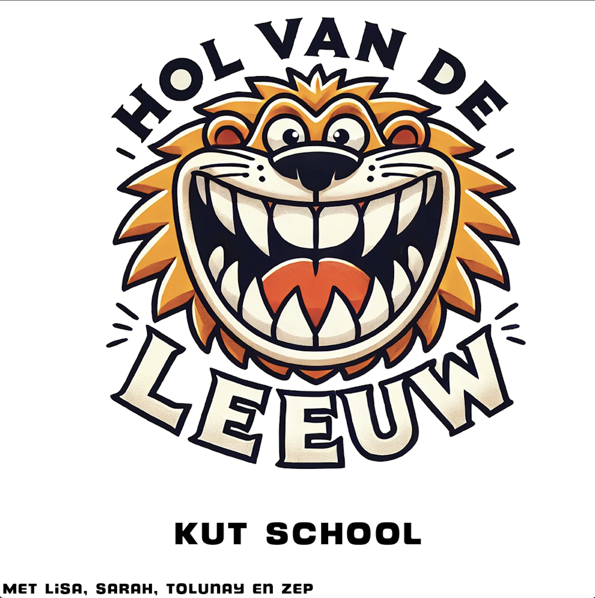

HOL VAN DE LEEUW

S1E26 "Kut School"
Jointjes roken in de pauze, ruzie met de docent en school crushes. In deze aflevering hebben wij het over het schoolleven en de verhalen die daarbij komen kijken.
"Ik werd wakker naast de moeder
van mijn beste mattie"
- Stijn, 22, Weesp